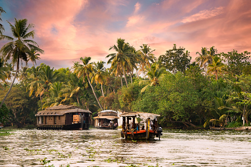
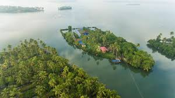

Responsive Blog HTML5 / CSS3

Alleppey
Hello from the land of coconuts.
Alappuzha (Alleppey) is known as ‘the Venice of the East’. Offering the best tourist places in Alleppey, this charming place is the hub of Kerala’s backwaters and is home to a huge network of backwaters and more than thousand houseboats. The houseboats you find in the backwaters of Alappuzha are in fact a reworked version of the Kettuvallams of olden times. Kettuvallam is a Malayalam word, ‘Kettu’, means living structures and ‘Vallom’ means boat. In the olden days, kettuvallam or boat with a thatched roof that covers over wooden hulls was used to carry tons of rice and spices. The modern houseboats are equipped with all the comforts of a good hotel room like air conditioners, modern toilets, cozy living rooms, a kitchen and even a balcony for angling. An uninterrupted view of life in the backwaters fringed with coconut trees can be enjoyed from a houseboat. A perfect place to unwind with its laidback canals and lush greenery. The Alappuzha beach with a 137-year-old pier extending into the sea and an old 17th-century lighthouse built by the Portuguese add to the magic of the place. It is famous for its boat races, marine products, and coir industry. So get ready to wander around this small but chaotic city center and bus-stand area, with its modest grid of canals. Head west to the beach or in practically any other direction towards the backwaters and Alleppey becomes elegant and greenery-fringed, waning into a watery world of hamlets, punted canoes, toddy shops and, of course, houseboats. Float along and gaze over paddy fields of succulent green, curvaceous rice barges and village life along the banks. Indeed, it is here that nature has spent upon the land her richest bounties. Come and explore the best tourist places in Alleppey.

Kochi
Just canoeing around.
Kochi is one of the cosmopolitan cities of Kerala which had come into limelight with its rich treasures of spices. It is also called as the Gateway to Kerala and its awe inspiring scenic views makes it a perfect tourist destination. Kochi is small place in Kerala which is also known as God's Own Country and famous for its green pastures with beautiful landscapes. This city houses the very famous port which is known for its world class standards and facilities. International airport at Nedumbassery is located approximately 40 km North of the city. Malayalam is the native language spoken here. With economic and social development this place has become one of the most happening places in Kerala. People are highly fashion conscious and great western culture influence can be seen in the way they dress. The Origin of Kochi Centuries ago Kochi was a commercial centre for traders like Arabs, British, Portuguese Dutch and Chinese. These travelers came to this beautiful city to get access to spices like cardamom, clove and black pepper which was abundantly available here. These trading activities greatly contributed to the development and growth of this small city. Thus, it got its name The Gateway to Kerala. With such rapid commercialization it attracted Portuguese, E English and Dutch to set up bases in this city. During the reign of the Portuguese (1530 A.D) a fort known as 'Manuel Kotta' or Fort Emmanuel was built. The Dutch came in later by 1653 and they managed to succeed over the Portuguese by 1663. Mysore emperors like Ali Haider and Tipu Sultan had defeated the Dutch but alas they were not successful with the British. Later in 1814 Dutch signed an agreement known as Anglo-Dutch treaty with the British wherein Kochi was traded for Bangka Island in Indonesia. After getting Independence from the British in 1947 the Travancore – Cochin state was established in 1949. In 1956, Kerala was formed by merging Kochi, Malabar and Travancore. After a thorough examination by the commission and after approval by the Kerala Legislative Assembly the Corporation of Cochin came into being in 1967. Climate Being very close to the equator, Kochi has a tropical monsoon. The temperatures range between 23-31°C. Summer season is in months of March to June where the highest temperature recorded at 35°C (95°F). During June and September this place experiences heavy showers and during October – December lighter rains can also be expected. Kochi gets an average rainfall of 3,228.3 mm which is greatly contributed by the south west monsoons.

Munnar
Falling for the falls in Munnar.
The very first place which comes to our minds when we talk about the tourist places in Kerala is Munnar is beyond doubt. Let’s discuss some interesting and ‘not that much known’ facts about Munnar. Do you know the name ‘Munnar’ comes from 3 rivers? (In Malayalam ‘moonnu’ means 3 and ‘aaru’ means river). Yes, Munnar is a geographical confluence of three rivers which are, Kandala river, Nallathanni and Mudhirappuzha. Munnar being one of the all season tourist places in Kerala situated in the Western Ghats mountain range of southern India and it’s around 1600 Meters above from sea level and is a hill station. Munnar is the largest tea growing region in the whole south India. These tea gardens were developed in the late 19th century and tourists can visit tea factories there to witness the process of making tea powder, categorizing it based on quality and packing it for export and for the market too. This hill station is famous for trekking as it’s in a mountain range and the favorite trekking spot is the Aanamudi, which is the highest peak in the Western Ghats. The Munnar hill station was once a summer resort for British Officials at the era of pre-Independence. They played an important role in developing the tea-estates there. The highest point in Munnar is the top station and which is one important spot which anybody should never miss. The view from here gives you an excellent glimpse of surrounding villages and a part of the neighboring state Tamil Nadu. Munnar is rich with exotic flora and fauna because of its climate. The Neelakkurinji flowers are most famous among them as it blooms once in 12 years. The whole valley turned violet at that time, and the roads to Munnar will be jammed with heavy traffic of tourists to witness this nature’s one of most elegant gifts. Munnar is also a favorite place for the hotel and resort business. It’s enriched with many 5 star resorts and budget resorts of kerala. One can never be in the middle of the road during a Munnar trip without a place to stay. There are so many luxury resorts which offer attractive views along with the best service. There are so many nearby tourist places there and visiting Munnar will never be a waste of time. Amberdale is one of finest luxury resorts in Kerala which you can select without confusions. Amberdale is suitable for family stay and which is the desired honeymoon destination too.

Kollam
Hidden point of nature.
Kollam (erstwhile Quilon) is a southern district of Kerala, located 70 km north of the state’s capital Thiruvananthapuram. It is flanked by the Arabian sea on the west, Tamil Nadu on the east, Alapuzha and Pathanamthitta districts on the north and Thiruvananthapuram district on the south. Housing a population of over 2.6 million, Kollam is one of the more densely peopled districts of India. The head quarters of the district administration is centred at Kollam City, the district’s capital. Administratively, the district is composed of two revenue divisions viz. Kollam and Punalur with three taluks each under them. Like the rest of Kerala, Kollam is climactically temperate with a generally sunny weather peaking in heat during April-May. The monsoon falls from June to September. The soil is varyingly loamy, laterite and forest at the coastal regions, mainland and the forest areas respectively. The heart land of Kollam is naturally veined by the Ashtamudi lake, a massive, multi-branched water body, which is also a popular boating attraction for tourists. This and the Kollam canal cutting through the city give Kollam a place of prominence in the waterway systems of the country. A number of islands of varying sizes beautifully spot the vast expanse of the lake. The city is graced by beaches where people go to spend quiet evenings. Kollam also has a considerably large forest cover on its eastern side making home for several eco tourism projects like Shenduruni, Thenmala, Palaruvi etc. Kollam City boasts of a long history of political, commercial and cultural importance having found mention in several ancient travellers’ accounts. With a varied colonial past under the Portuguese, the Dutch and the British, Kollam has locations of historical importance like the Thangasseri light house, the St. Thomas Fort and cemetery built by the Portuguese, Thevally Palace, Cheenakkottaram etc. Besides, it also is the site of several old buildings constructed by the Travancore kings (its rulers during the pre-Independence times) in a variety of architectural styles, where many government offices still function. Kollam has been the centre of cashew industry in Kerala from the time of the Portuguese in 16th c. Having hundreds of working cashew factories in the district, Kollam still continues to be the largest processed cashew exporter in India. Neendakara and Thangasseri, the two fishing harbours and ports in Kollam, support a thriving marine industry providing a variety of employment and livelihood to people in large numbers.

Varkala
the cliffs,the beech,the lagoon.
Varkala is a small quiet settlement in the suburbs of Thiruvananthapuram district. The town of Varkala has received much attention because of its attractive beach, the 2000 year old Vishnu temple and Sivagiri mutt. One of the legends of Varkala says that a Pandyan King was instructed by Lord Brahma to build a temple at this very place to redeem him of his sins. The waters of the Varkala beach are considered as 'holy' by many people. The Varkala beach is clean and well-maintained offering a beautiful ambience blended with tranqullity. The beach proposes a variety of mood lifting elements like paragliding, water skiing, surfing and boating. The water in the Varkala beach is known for its natural spring water which has many curative values. The Varkala cliffs nears the beach is now a geo-heritage site. Sivagiri mutt, another tourist attraction is a famous ashram founded by phillosopher Sree Narayan Guru. Varkala offers great accommodation facilities for tourists and is becoming a popular health resort for its many Ayurvedic massage centres. Altitude The town is at an altitude of 190 metres( 623 ft) above mean sea level. Weather The temparatue is usually on the warmer side throughout the year with pleasant winters and extremely hot summers. Best Time to Visit? During winter season that starts in December and continues till February. How to Get There? By Air Varkala does not have an airport of its own. However, Trivandrum International Airport is just about 55 Km awayfrom the town. A cab ride of 1 hour 30 minutes should get you to Varkala. By Train Varkala Railway Station is 3 Km away from the main area. Travelling by train can be a faster and cheaper option in and around the state. Additionally, almost all major trains pass through the Varkala railway station. By Road Varkala bus routes are efficiently connected with the other prominent places of Kerala as well as Tamil Nadu. Kerala state transportation has ample number of well maintained, air conditioned buses intersecting major junctions every half an hour. Local Cuisines Kerala fish soup, fish tikkas and other fresh sea food prepared in the tandoor.

Thiruvanthapuram
Thiruvanthapuram
A gracious and evergreen city spread over seven hills, Thiruvananthapuram, capital of Kerala, is steeped in history and culture. Located in the extreme south of the state, its shores are washed by the warm waters of the Arabian Sea. This is a city where time moves gracefully with the day unfolding according to time honoured rhythms, qualities which make it one of the best cities in the country. Holding fort in the heart of the capital is Sri Padmanabhaswamy Temple which is dedicated to Lord Vishnu who reclines on the serpent Anantha and after whom the city is named. Formerly called Trivandrum, the city’s original name was restored in 1991.As the visitor moves around the city he or she cannot fail to notice many traditional elements of Kerala culture that have been passed down from generations. From temple elephants swaggering down a street to traditionally dressed women and men as well as people eating off banana leaves, the sights are many and often found only in this part of the country. Thiruvananthapuram is cutting edge too. The city occupies pride of place in India’s space research programme and is home to the Indian Space Research Organisation (ISRO) and the Vikram Sarabhai Space Centre as well as several other institutions such as the Rajiv Gandhi Centre for Biotechnology, Technopark and the Indian Institute of Information Technology and Management. Students from all over Kerala make a beeline for its many colleges and professional institutes to advance their prospects. This salubrious city is today a magnet for tourists, businessmen and professionals. For many of them it captures the essence of Kerala and is an ideal springboard from which to venture into the rest of the state. The city sprang into the nation’s consciousness in 2011 with the discovery of a hoard of treasure at Sri Padmanabhaswamy Temple. Hundreds of valuable items had accumulated over the centuries as gifts from the rulers of Travancore to the temple and is said to be worth over Rs 1 trillion. A rich legacy indeed! Major tourist attractions of Thiruvananthapuram Sree Padmanabhaswamy Temple, East Fort, Napier Museum and Zoo, Sree Chithra Art Gallery, Kowdiar Palace, Kuthira Malika Palace, Padmanabhapuram Palace, Kanakakunnu Palace, Attukal Bhagavathy Temple, Kerala Science & Technology Museum/Priyadarshini Planetarium, Chacha Nehru Children’s Museum, CVN Kalari Sangham, Kovalam, Varkala, Ponmudi, Poovar, Veli Tourist Village & Sanghumukham Beach, Vellayani Lake, Neyyar Wildlife Sanctuary and Dam
4 comments
KoteshOct1,2022
Very great work at the topic of Kerala. You tell me all aspects of life in Kerala, even their life style, culture and people. Children in rough getup show their real life aspects. I want to say you congrates for this great article..
NageshJan 21,2022
Hello Hari. How lovely to hear from you – and you bring back fond memories of us all in Kerala. Lots of stories from there too!
RudraMay 28, 2021
i check this site very nice your topic is very intersting
SamMay 28, 2021
Fantastic photos. Did you eat in the outdoor food court near the night market? Delicious and so cheap. Love the Blog…..safe travels.Hari